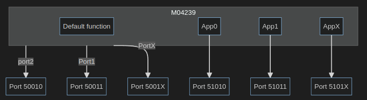

Ports overview
Within the O3R platform, several kinds of ports are used. This document clarifies what these different ports refer to and how to use them.
Hardware ports
There are the 6 hardware ports on the VPU, where the O3R heads are connected.
These ports are mapped to TCP/IP communication ports, that are referred to as PCIC ports. PCIC is an ifm-specific communication protocol.
While it is good practice to check the PCIC port directly for the requested hardware port (see below how to do this), here the correspondence between hardware ports and PCIC ports for reference:
Hardware port |
PCIC port |
|---|---|
Port 0 |
50010 |
Port 1 |
50011 |
Port 2 |
50012 |
Port 3 |
50013 |
Port 4 |
50014 |
Port 5 |
50015 |
IMU port
Besides the hardware ports mentioned above, there is an additional non-configurable hardware port Port 6 which is specific to the IMU on board the VPU. The PCIC port mapped to Port 6 is 50016 (only used when configuring ODS).
Note
It is not possible to receive any data from the IMU at the moment.
Application ports
When the user creates an application instance, the application output can be received from the application instance’s dedicated communication port. Each application instance has one unique communication port for sending data.
The TCP/IP ports for applications increment from 51010. For reference, below is the application number to PCIC port correspondence.
Application number |
TCP/IP port |
|---|---|
App 0 |
51010 |
App 1 |
51011 |
App x |
5101x |
For more information on instantiating ODS applications, refer to the ODS getting started documentation.

How to: retrieve the PCIC port number
To retrieve the PCIC port number for any port, one can use the ifm3d API. The following code snippet serves as an example to retrieve the TCP/IP port for Port 2:
from ifm3dpy.device import O3R
o3r = O3R()
pcic_port = o3r.get(["/ports/port2/data/pcicTCPPort"])["ports"]["port2"]["data"]["pcicTCPPort"]
>>>50012
Note
The o3r.get command shown above is provided as a subset of the JSON configuration. This is done to optimize the get process: only the necessary information is retrieved instead of the whole configuration.
The following code snippet shows how to retrieve the TCP/IP port of the first application instance:
from ifm3dpy.device import O3R
o3r = O3R()
app_port = o3r.get(["/applications/instances/app0/data/pcicTCPPort"])["applications"]["instances"]["app0"]["data"]["pcicTCPPort"]
>>>51010